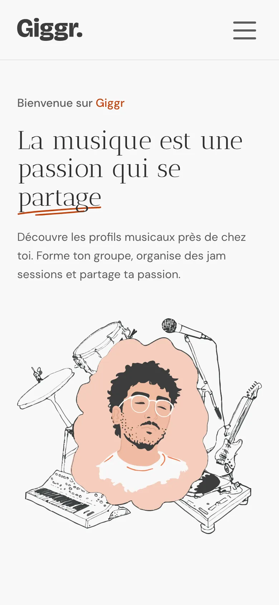
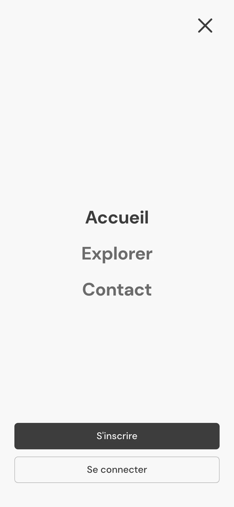
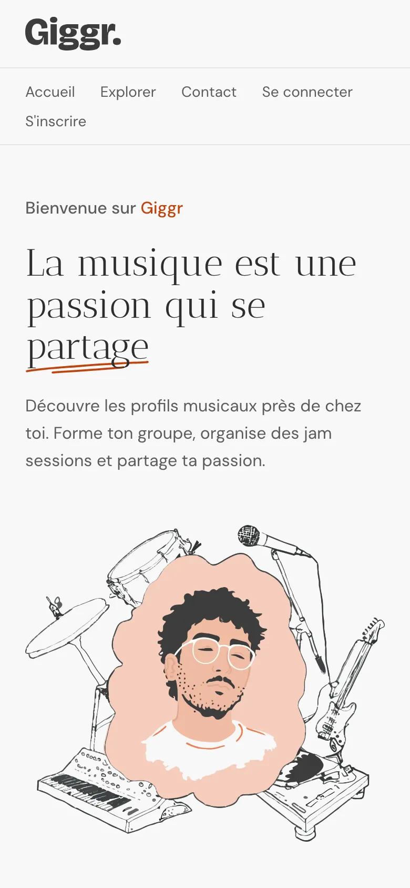

L’interface de Giggr est rendue côté serveur (Blade), puis enrichie par JavaScript. Quatre briques se partagent ce rôle. Le tableau indique, pour chacune, sa fonction dans l’application et ce qui reste accessible sans JavaScript.
| Brique | Rôle dans Giggr | Sans JavaScript |
|---|---|---|
| Livewire 4 | Composants dynamiques rendus côté serveur : filtres d’exploration, formulaires, navigation wire:navigate, états de chargement. |
Le contenu Blade reste consultable et les liens fonctionnent en navigation classique. Les mises à jour dynamiques (filtres, formulaires) nécessitent JavaScript. |
| Alpine.js | État d’interface côté client (embarqué par Livewire) : panneaux ouverts ou fermés, modes édition, carrousel d’accueil. | Les éléments restent affichés dans leur état initial ; les bascules purement visuelles ne répondent plus. |
| Laravel Echo + Reverb | Messagerie en temps réel : diffusion de l’événement MessageSent sur un canal privé de conversation, réception par WebSocket. |
Nécessite JavaScript et une connexion WebSocket ; sans cela, les nouveaux messages n’arrivent pas en direct. |
| GSAP | Animations au scroll : empilement épinglé des blocs (feature-stack), carrousel. |
Le contenu reste lisible sans l’animation ; l’effet est aussi désactivé si prefers-reduced-motion est demandé. |
Giggr s’appuie sur Livewire 4 pour rendre l’interface réactive sans écrire d’API cliente. Quatre usages principaux :
explore/filter-drawer) et le
sélecteur de localité.
La messagerie est l’usage le plus exigeant de JavaScript dans Giggr : les messages arrivent en direct, sans rechargement et sans API cliente à écrire. Tout repose sur la diffusion d’événements (broadcasting) de Laravel, reçue côté client par Laravel Echo via un serveur WebSocket Reverb.
SendMessage, qui enregistre le
message en base.
SendMessage diffuse ensuite
l’événement MessageSent
(ShouldBroadcast) sur un canal privé
propre à la conversation, ConversationChannel.
thread-messages) ajoute le message en
bas, et le compteur de messages non lus
(MessagingBadge) s’incrémente sur les
autres écrans du destinataire.
Accusés de lecture. Quand le
destinataire ouvre la conversation, l’action
MarkConversationAsRead marque les messages
comme lus et diffuse l’événement
MessagesRead : l’expéditeur voit l’état
passer à « lu » et le compteur de non-lus retombe à zéro, là encore en direct.
Sans JavaScript. La messagerie n’est pas utilisable : le panneau de conversation s’ouvre via JavaScript, et le formulaire d’envoi est un composant Livewire — qui a lui aussi besoin de JavaScript pour fonctionner. C’est, comme les filtres en direct, une fonctionnalité interactive réservée à JavaScript, et assumée comme telle : le contenu public (profils, annonces) reste, lui, consultable sans JavaScript, mais converser suppose un navigateur qui l’exécute.
Avec JavaScript mais sans WebSocket. On peut alors ouvrir une conversation et envoyer un message (Livewire fonctionne en HTTP classique), mais la réception en direct (Echo et Reverb) ne se fait plus : les nouveaux messages n’apparaissent qu’à la prochaine interaction ou au rechargement de la page.
Le contenu de Giggr est rendu côté serveur en Blade : pages, profils et annonces restent consultables sans JavaScript, et la navigation par liens fonctionne. JavaScript ajoute la réactivité par-dessus, et l’application prévoit explicitement son absence.
Le mécanisme est systématique : tout élément qui dépend de JavaScript porte
l’attribut data-js-only, et un
<noscript> le masque quand
JavaScript est absent. Un équivalent statique prend alors le relais.
{{-- layouts/app.blade.php : sans JS, on masque tout ce qui en dépend --}}
<noscript>
<style>[data-js-only] { display: none !important; }</style>
</noscript>
{{-- header.blade.php : le burger (Alpine) est data-js-only... --}}
<div class="md:hidden" data-js-only x-data="{ open: false }">
{{-- bouton burger + menu plein écran Alpine --}}
</div>
{{-- ...une navigation de secours, 100% CSS, prend le relais --}}
<noscript>
<nav aria-label="Navigation de secours">
<a href="{{ route('home') }}">Accueil</a>
<a href="{{ route('explore') }}">Explorer</a>
<a href="{{ route('contact') }}">Contact</a>
</nav>
</noscript>data-js-only.
Sans JavaScript, une navigation de secours entièrement en CSS,
listée dans un <noscript>, prend
le relais (liens des pages publiques, déconnexion en formulaire POST).
:class appliquant
grid-rows-[0fr]). Sans JavaScript, ce
binding ne s’applique pas : l’état par défaut est ouvert,
donc toutes les réponses restent lisibles.
<form method="POST"> traités
côté serveur, qui fonctionnent sans JavaScript.
Ce qui reste réservé à JavaScript : les filtres en direct, la soumission des formulaires Livewire, la messagerie temps réel et les retours de chargement.
Côté mouvement, l’animation d’empilement (GSAP) lit la préférence système avant de s’activer : si l’utilisateur demande un mouvement réduit, ou si la fenêtre est trop courte, elle ne se déclenche pas et le contenu s’affiche normalement.
function canStack() {
return !window.matchMedia('(prefers-reduced-motion: reduce)').matches
&& window.innerHeight >= config.minViewportHeight;
}

